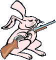

|
Mänskligheten gått för långt! I alla tider har människorna kallblodigt mördat oss kaniner. De har t o m haft mage att göra underhållning av det! Sveriges regering har beslutat att utrota kaninerna som art. De har tillsatt en elitstyrka för uppgiften, och uppmanar allmänheten att döda varje kanin de ser. Kaninfientliga affischer sätts upp på gator och torg. Stopppa galenskapen! Statens mördare tränas i en villa på landsbygden utanför Stockholm. Ditt uppdrag som kanin blir att inta huset och tillintetgöra alla mördare och deras ledare. Uppdraget är indelat i flera nivåer. Du får all information du behöver innan varje nivå. Vår överlevnad beror på dig. Må den allsmäktiga moroten vara dig nådig.
Tryck på den beväpnade kaninen för att börja. OBS! Vänta tills alla filer är laddade!  |